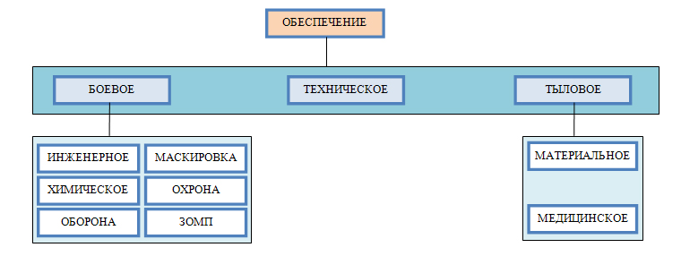

ОСНОВЫ ПЛАНИРОВАНИЯ ВОИНСКИХ Ж.Д. ПЕРЕВОЗОК
Особенности выполнения воинских перевозок обуславливают необходимость их обеспечения: технического, материального, медицинского, боевого (оперативного).
Техническое обеспечение - это обеспечение воинских перевозок подвижным составом (локомотивами, вагонами, судами), погрузочно-выгрузочными устройствами и приспособлениями, крепежными материалами и приспособлениями. Осуществляется оно органами транспорта и частично перевозимыми войсками.
Материальное обеспечение - это обеспечение перевозимых войск, караулов по охране и сопровождению воинских грузов горячей пищей, продовольствием, водой, топливом, свечами. Осуществляется оно перевозимыми войсками и органами транспорта под общим руководством органов военных сообщений.
Медицинское обеспечение заключается в проведении профилактических мероприятий, направленных на предупреждение инфекционных заболеваний при перевозке и оказание медицинской помощи заболевшим. Осуществляется оно медицинским персоналом перевозимых войск, медицинскими учреждениями транспорта и Министерства обороны.
Боевое (оперативное) перевозимых войск осуществляется силами и средствами перевозимых войск, командования организующего перевозку, а в отдельных случаях подразделений ПВО воинских поездов службы военных сообщений.
